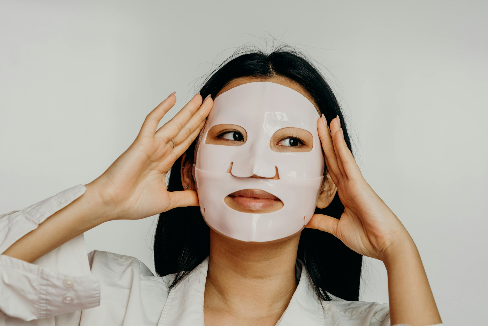
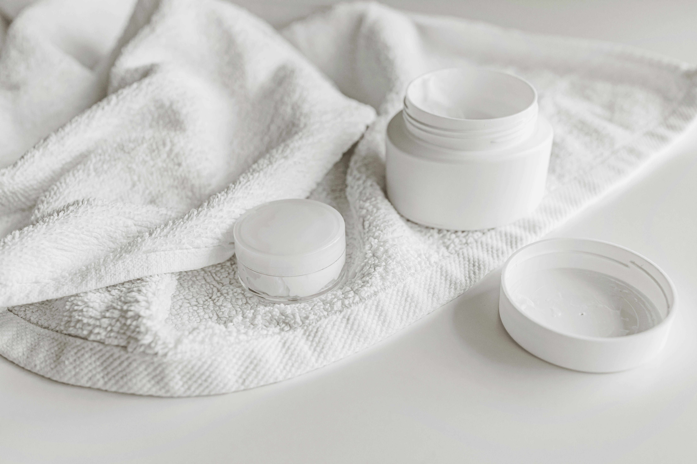
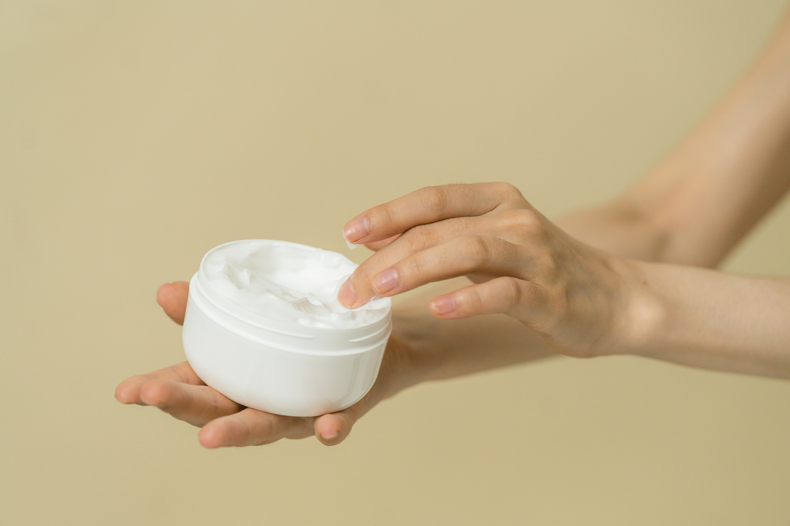
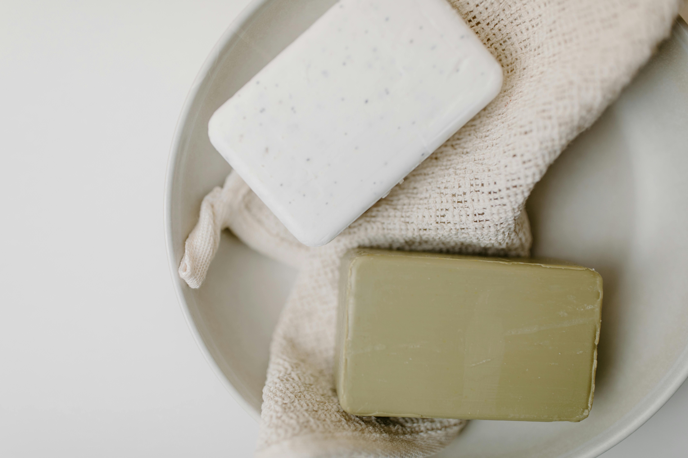

Our Products
Dapatkan kulit impian Anda dengan koleksi produk perawatan wajah dan tubuh unggulan kami. Kami menawarkan solusi untuk berbagai masalah kulit, mulai dari kulit kering hingga berjerawat. Temukan produk yang tepat untuk kebutuhan kulit Anda dan rasakan perbedaannya.
Face Care
Produk perawatan wajah yang diformulasikan untuk menjaga kulit tetap bersih, sehat, dan bercahaya.
Hydrating Face Mask for Acne Prone Skin 50ml
Face Mask
Hydrating Face Mask berfungsi untuk meningkatkan kelembapan kulit, sehingga kulit terasa lebih kenyal, lembut, dan terhidrasi dengan baik. Diperkaya dengan kandungan aloe vera yang efektif untuk melembapkan dan menenangkan kulit.
Rp75.000
Brightening Stuff Day Cream
Day Cream
Brightening Day Cream ini membantu melembapkan kulit sepanjang hari sekaligus melindungi dari sinar matahari dengan SPF 30 PA++. Diperkaya dengan kandungan vitamin C untuk mencerahkan kulit.
Rp95.000
Body Care
Produk perawatan tubuh yang membantu melembutkan, menutrisi, dan melindungi kulit agar tetap sehat.
Nourishing Body Lotion
Body Lotion
Body lotion ini melembapkan kulit hingga 24 jam, diperkaya dengan shea butter dan vitamin E yang menutrisi kulit agar tetap lembut dan sehat.
Rp65.000
Nourishing Body Soap
Body Soap
Body soap ini berfungsi mengangkat sel kulit mati dan kotoran yang menempel. Terbuat dari butiran kopi alami dan minyak kelapa untuk kulit lebih halus dan segar.
Rp85.000